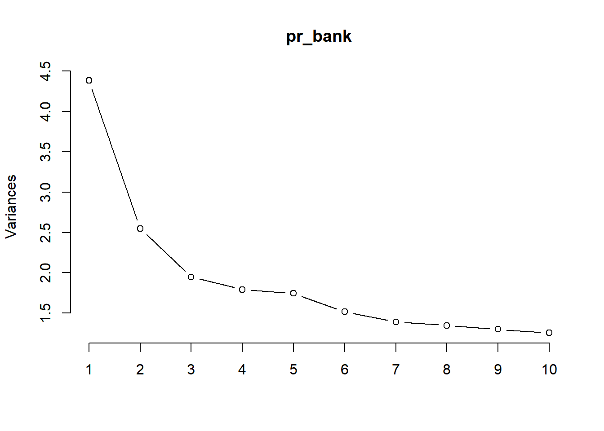
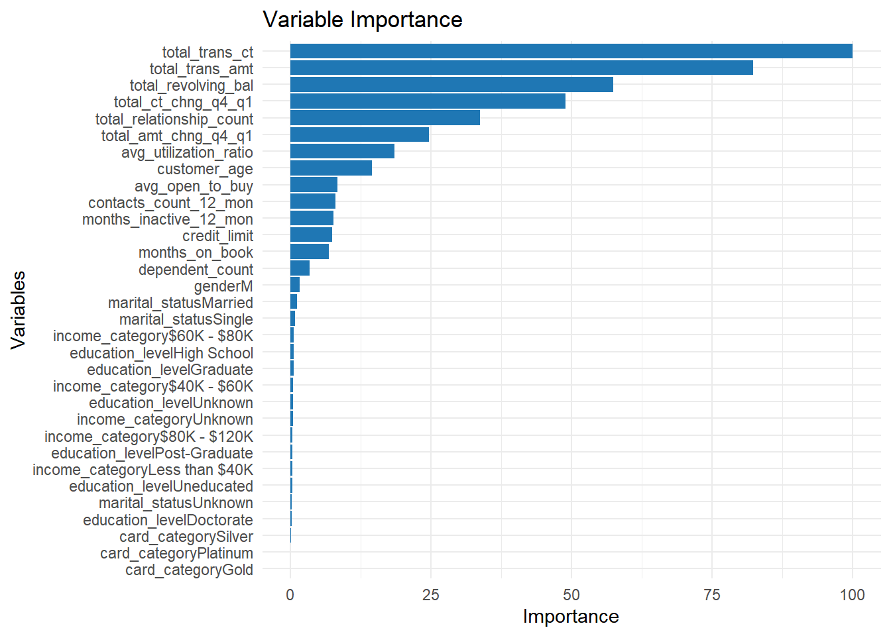
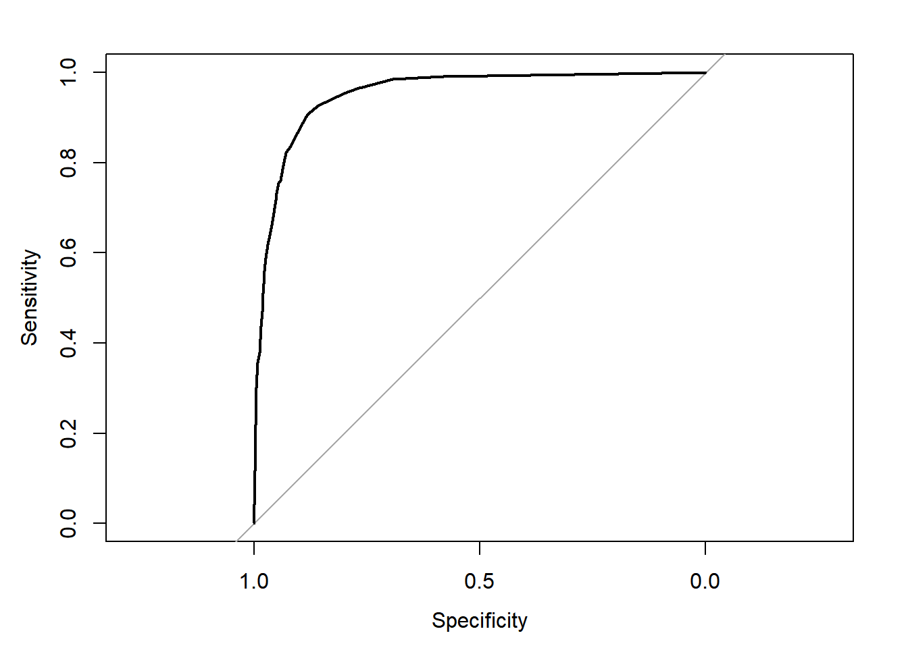
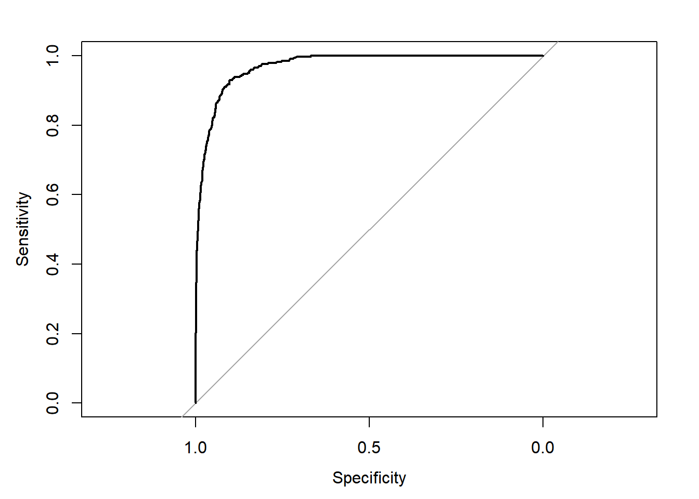
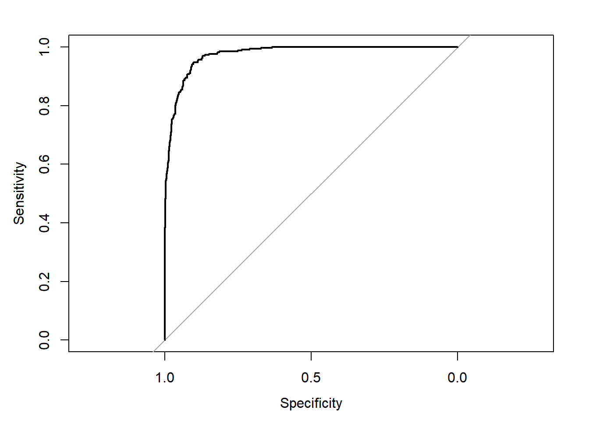
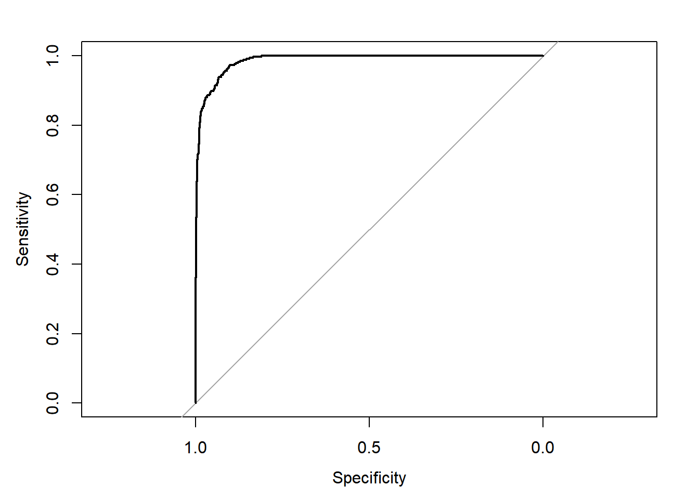

Behind the Scenes
library(tidyverse)
library(caret)
library(pROC)
library(MLmetrics)
library(fastDummies)
library(skimr)This report presents an analysis of bank customer churn using a dataset containing various attributes of bank customers. The goal is to predict whether a customer is likely to churn or not. The dataset consists of 10,127 rows and 20 columns, including both numeric and character variables. The objective is to create a model that predicts customer churn using only five features.
The methodology employed in predicting bank churners consisted of several steps. Initially, the necessary R packages were loaded, including tidyverse, caret, pROC, MLmetrics, fastDummies, and skimr, to facilitate the analysis. The bank dataset, obtained from an external source, was imported and assigned to the “bank” variable.
An Exploratory Data Analysis (EDA) was conducted using the skim function, which provided summary statistics and distributions of the data. Visualizations, including histograms and scatter plots, were created to explore the relationships between variables and the churn outcome.
Principal Component Analysis (PCA) was employed using the prcomp function after preprocessing the data through scaling and centering. The summary function offered insights into the results of PCA, and the screeplot visually displayed the variance explained by each principal component. The top five principal components were extracted, and their loadings were examined.
To determine variable importance, a Random Forest model was trained on the entire dataset using the train function from the caret package. The varImp function was used to calculate the importance of variables, and a plot was generated to visualize their significance.
The top two principal components, “young_spenders” and “old_spenders,” were selected, along with the top five variables from the dataset. These features were combined to create a new dataset called “banksy.”
A K-Nearest Neighbors (KNN) model was trained on the banksy dataset using the train function, with the tuning parameter “k” determined through cross-validation. The model’s performance was evaluated using a confusion matrix and the receiver operating characteristic (ROC) curve.
To address the class imbalance between churn and non-churn instances, downsampling was performed on the training dataset. The downSample function from the caret package was utilized for this purpose.
Another Random Forest model was then trained on the downsampled training dataset, and its performance was evaluated using a confusion matrix and the ROC curve.
Two gradient boosted models were trained: one using the original dataset with PCA variables, and the other using only the top five variables. Confusion matrices and ROC curves were utilized to evaluate the performance of both models.
Finally, the best-performing model, fit_gbm2, was selected based on evaluation metrics and its optimal hyperparameters were printed.
In conclusion, the methodology involved various stages, including data preprocessing, exploratory analysis, dimensionality reduction using PCA, variable importance analysis with Random Forest, training and evaluating models such as KNN, Random Forest, and Gradient Boosted models, and ultimately selecting the best-performing model based on evaluation metrics.
library(tidyverse)
library(caret)
library(pROC)
library(MLmetrics)
library(fastDummies)
library(skimr)The dataset contains six character variables and 14 numeric variables. The character variables include gender, education level, marital status, income category, card category, and churn (the target variable). The numeric variables include customer age, dependent count, months on book, total relationship count, months inactive in the last 12 months, contacts count in the last 12 months, credit limit, total revolving balance, average open-to-buy, total amount change from Q4 to Q1, total transaction amount, total transaction count, total count change from Q4 to Q1, and average utilization ratio.
The numeric variables have been analyzed using summary statistics. The mean age of bank customers is 46.33 years, with a standard deviation of 8.02. The age ranges from 26 to 73 years. The dependent count ranges from 0 to 5, with an average of 2.35. The months on book range from 13 to 56, with an average of 35.93. The total relationship count ranges from 1 to 6, with an average of 3.81. The months inactive in the last 12 months range from 0 to 6, with an average of 2.34. The contacts count in the last 12 months ranges from 0 to 6, with an average of 2.46. The credit limit ranges from 1,438.3 to 34,516, with an average of 8,631.95. The total revolving balance ranges from 0 to 2,517, with an average of 1,162.81. The average open-to-buy ranges from 3 to 34,516, with an average of 7,469.14. The total amount change from Q4 to Q1 ranges from 0 to 3.4, with an average of 0.76. The total transaction amount ranges from 510 to 18,484, with an average of 4,404.09. The total transaction count ranges from 10 to 139, with an average of 64.86. The total count change from Q4 to Q1 ranges from 0 to 3.71, with an average of 0.71. The average utilization ratio ranges from 0 to 1, with an average of 0.27.
bank <-readRDS(gzcon(url("https://github.com/karolo89/Raw_Data/raw/main/BankChurners.rds")))
bank = bank %>% rename_all(funs(tolower(.)))
skim(bank)| Name | bank |
| Number of rows | 10127 |
| Number of columns | 20 |
| _______________________ | |
| Column type frequency: | |
| character | 6 |
| numeric | 14 |
| ________________________ | |
| Group variables | None |
Variable type: character
| skim_variable | n_missing | complete_rate | min | max | empty | n_unique | whitespace |
|---|---|---|---|---|---|---|---|
| gender | 0 | 1 | 1 | 1 | 0 | 2 | 0 |
| education_level | 0 | 1 | 7 | 13 | 0 | 7 | 0 |
| marital_status | 0 | 1 | 6 | 8 | 0 | 4 | 0 |
| income_category | 0 | 1 | 7 | 14 | 0 | 6 | 0 |
| card_category | 0 | 1 | 4 | 8 | 0 | 4 | 0 |
| churn | 0 | 1 | 2 | 3 | 0 | 2 | 0 |
Variable type: numeric
| skim_variable | n_missing | complete_rate | mean | sd | p0 | p25 | p50 | p75 | p100 | hist |
|---|---|---|---|---|---|---|---|---|---|---|
| customer_age | 0 | 1 | 46.33 | 8.02 | 26.0 | 41.00 | 46.00 | 52.00 | 73.00 | ▂▆▇▃▁ |
| dependent_count | 0 | 1 | 2.35 | 1.30 | 0.0 | 1.00 | 2.00 | 3.00 | 5.00 | ▇▇▇▅▁ |
| months_on_book | 0 | 1 | 35.93 | 7.99 | 13.0 | 31.00 | 36.00 | 40.00 | 56.00 | ▁▃▇▃▂ |
| total_relationship_count | 0 | 1 | 3.81 | 1.55 | 1.0 | 3.00 | 4.00 | 5.00 | 6.00 | ▇▇▆▆▆ |
| months_inactive_12_mon | 0 | 1 | 2.34 | 1.01 | 0.0 | 2.00 | 2.00 | 3.00 | 6.00 | ▅▇▇▁▁ |
| contacts_count_12_mon | 0 | 1 | 2.46 | 1.11 | 0.0 | 2.00 | 2.00 | 3.00 | 6.00 | ▅▇▇▃▁ |
| credit_limit | 0 | 1 | 8631.95 | 9088.78 | 1438.3 | 2555.00 | 4549.00 | 11067.50 | 34516.00 | ▇▂▁▁▁ |
| total_revolving_bal | 0 | 1 | 1162.81 | 814.99 | 0.0 | 359.00 | 1276.00 | 1784.00 | 2517.00 | ▇▅▇▇▅ |
| avg_open_to_buy | 0 | 1 | 7469.14 | 9090.69 | 3.0 | 1324.50 | 3474.00 | 9859.00 | 34516.00 | ▇▂▁▁▁ |
| total_amt_chng_q4_q1 | 0 | 1 | 0.76 | 0.22 | 0.0 | 0.63 | 0.74 | 0.86 | 3.40 | ▅▇▁▁▁ |
| total_trans_amt | 0 | 1 | 4404.09 | 3397.13 | 510.0 | 2155.50 | 3899.00 | 4741.00 | 18484.00 | ▇▅▁▁▁ |
| total_trans_ct | 0 | 1 | 64.86 | 23.47 | 10.0 | 45.00 | 67.00 | 81.00 | 139.00 | ▂▅▇▂▁ |
| total_ct_chng_q4_q1 | 0 | 1 | 0.71 | 0.24 | 0.0 | 0.58 | 0.70 | 0.82 | 3.71 | ▇▆▁▁▁ |
| avg_utilization_ratio | 0 | 1 | 0.27 | 0.28 | 0.0 | 0.02 | 0.18 | 0.50 | 1.00 | ▇▂▂▂▁ |
bank = bank %>% mutate(churn = as.factor(churn))
variables = bank %>% select(-churn) %>% colnames() Principal Component Analysis (PCA) was performed on the dataset to identify the most influential components. The scree plot revealed that the first [number] principal components explain a significant portion of the variance in the data. Based on the component loadings, the “young spenders” and “old spenders” components appear to be the most predictive of churn.
bank = bank %>% mutate(churn = as.factor(churn))
bank2 = bank %>% select(-churn) %>% dummy_cols(remove_selected_columns = T)
bank3 = cbind(bank2, select(bank,churn))
pr_bank = prcomp(x = select(bank3,-churn), scale = T, center = T)
summary(pr_bank)Importance of components:
PC1 PC2 PC3 PC4 PC5 PC6 PC7
Standard deviation 2.0935 1.59707 1.39557 1.33895 1.32059 1.23115 1.17914
Proportion of Variance 0.1184 0.06894 0.05264 0.04845 0.04713 0.04097 0.03758
Cumulative Proportion 0.1184 0.18739 0.24003 0.28848 0.33562 0.37658 0.41416
PC8 PC9 PC10 PC11 PC12 PC13 PC14
Standard deviation 1.16072 1.14016 1.12050 1.10705 1.09341 1.08695 1.07232
Proportion of Variance 0.03641 0.03513 0.03393 0.03312 0.03231 0.03193 0.03108
Cumulative Proportion 0.45057 0.48571 0.51964 0.55276 0.58507 0.61700 0.64808
PC15 PC16 PC17 PC18 PC19 PC20 PC21
Standard deviation 1.06071 1.04983 1.03504 1.03468 1.01815 1.00334 1.00200
Proportion of Variance 0.03041 0.02979 0.02895 0.02893 0.02802 0.02721 0.02714
Cumulative Proportion 0.67849 0.70828 0.73723 0.76617 0.79418 0.82139 0.84853
PC22 PC23 PC24 PC25 PC26 PC27 PC28
Standard deviation 0.98911 0.98698 0.94978 0.89307 0.77324 0.73409 0.48917
Proportion of Variance 0.02644 0.02633 0.02438 0.02156 0.01616 0.01456 0.00647
Cumulative Proportion 0.87497 0.90130 0.92568 0.94723 0.96339 0.97796 0.98442
PC29 PC30 PC31 PC32 PC33 PC34
Standard deviation 0.45819 0.45069 0.40402 3.319e-15 2.797e-15 1.658e-15
Proportion of Variance 0.00567 0.00549 0.00441 0.000e+00 0.000e+00 0.000e+00
Cumulative Proportion 0.99010 0.99559 1.00000 1.000e+00 1.000e+00 1.000e+00
PC35 PC36 PC37
Standard deviation 8.306e-16 7.947e-16 5.318e-16
Proportion of Variance 0.000e+00 0.000e+00 0.000e+00
Cumulative Proportion 1.000e+00 1.000e+00 1.000e+00screeplot(pr_bank, type = "lines")
head(pr_bank$rotation) PC1 PC2 PC3 PC4
customer_age -0.010813997 0.07575479 -0.4330194 0.44349923
dependent_count 0.036907819 -0.03773176 0.1127192 -0.08119344
months_on_book -0.005699747 0.07134628 -0.4278530 0.43907287
total_relationship_count -0.049689093 0.20014156 -0.1023431 -0.14783665
months_inactive_12_mon -0.012256624 0.02657769 -0.1145865 -0.00192171
contacts_count_12_mon 0.016040264 0.09090432 -0.1233009 -0.16313733
PC5 PC6 PC7 PC8
customer_age -0.26684222 0.003345576 -0.03336354 0.03636211
dependent_count 0.10910052 0.097514325 0.04081514 -0.04468165
months_on_book -0.27473438 0.006509941 -0.02940410 0.04106787
total_relationship_count 0.11507528 -0.293862484 -0.10860198 0.11936190
months_inactive_12_mon -0.05928810 0.039294366 0.04268363 -0.01071041
contacts_count_12_mon 0.03555331 -0.047800261 0.05699464 -0.06272773
PC9 PC10 PC11 PC12
customer_age 0.034871555 -0.02388748 -0.037534809 -0.03807232
dependent_count -0.076070481 0.12190979 -0.008339845 0.02454218
months_on_book 0.044670014 -0.02899957 -0.039330876 -0.04986042
total_relationship_count -0.002946349 -0.01856168 -0.023561561 -0.04594087
months_inactive_12_mon -0.042706255 -0.01254024 -0.001370611 -0.10113015
contacts_count_12_mon 0.018184995 0.00377209 0.002264876 0.01355260
PC13 PC14 PC15 PC16
customer_age -0.06116398 0.06317606 0.006494843 0.009436493
dependent_count -0.02638936 0.11642017 0.001673607 0.055360500
months_on_book -0.07896600 0.06289540 0.002830306 0.003837683
total_relationship_count -0.02254961 0.04741229 0.048781401 -0.041637320
months_inactive_12_mon -0.01108998 -0.02635780 -0.049552509 0.051869876
contacts_count_12_mon 0.07469369 -0.10088119 0.072474077 -0.005302043
PC17 PC18 PC19 PC20
customer_age 0.0046260131 0.01474486 0.01783912 -0.007356427
dependent_count 0.1146010390 0.15478813 -0.05897042 0.074815354
months_on_book 0.0001919797 0.01262245 0.02195394 0.015122347
total_relationship_count -0.0408216142 0.01686286 0.01348213 -0.018687486
months_inactive_12_mon 0.0824836888 -0.01448339 0.11059555 0.277638094
contacts_count_12_mon 0.0407699668 -0.02726225 0.06562620 0.146390167
PC21 PC22 PC23 PC24
customer_age -0.06558833 -0.06351209 -0.01064648 0.1024421
dependent_count -0.50796833 0.02001298 -0.50564694 0.5719210
months_on_book -0.06845297 -0.04275912 -0.02657220 0.1239862
total_relationship_count -0.10580938 -0.03651157 0.03068239 -0.1217489
months_inactive_12_mon 0.21584825 0.78096916 -0.40165046 -0.2026135
contacts_count_12_mon 0.52037905 0.09210553 0.27449467 0.7165355
PC25 PC26 PC27 PC28
customer_age -0.02043515 0.02336751 -0.018369091 0.144540965
dependent_count -0.06697885 0.10364753 -0.073862975 -0.064763592
months_on_book -0.03663324 0.05514194 -0.015721295 -0.165681805
total_relationship_count -0.85955423 0.09837121 0.012247228 -0.029775424
months_inactive_12_mon -0.06269537 -0.01000118 0.032628165 0.003588938
contacts_count_12_mon -0.11331729 -0.08398211 -0.008385573 0.024734695
PC29 PC30 PC31 PC32
customer_age -0.635515600 0.261539522 -0.09877505 -1.887639e-15
dependent_count -0.026086053 0.032269460 0.01517943 1.925078e-16
months_on_book 0.636461211 -0.234306089 0.09139278 2.426439e-17
total_relationship_count -0.039147775 -0.025969167 0.08419164 1.291153e-16
months_inactive_12_mon -0.019657762 -0.005034916 -0.01066676 -5.772458e-18
contacts_count_12_mon 0.001569711 0.003087043 -0.02410749 -5.374320e-17
PC33 PC34 PC35
customer_age 0.000000e+00 0.000000e+00 0.000000e+00
dependent_count -7.416891e-16 3.532298e-16 -1.361726e-17
months_on_book -8.967587e-19 3.684053e-17 -6.963161e-17
total_relationship_count -1.599655e-16 -8.128213e-17 1.130684e-16
months_inactive_12_mon -3.464590e-16 8.140217e-17 -1.148155e-16
contacts_count_12_mon -6.811342e-17 -7.923795e-18 4.187115e-17
PC36 PC37
customer_age 0.000000e+00 0.000000e+00
dependent_count -2.819017e-17 6.676781e-17
months_on_book 1.695052e-16 -3.853568e-17
total_relationship_count -1.974333e-16 -1.370081e-16
months_inactive_12_mon 8.703000e-17 -5.534544e-18
contacts_count_12_mon -1.440254e-17 -1.028874e-16rownames_to_column(as.data.frame(pr_bank$rotation)) %>%
select(1:5) %>%
filter(abs(PC1) >= 0.3 | abs(PC2) >= 0.3 | abs(PC3) >= 0.3 | abs(PC4) >= 0.3) rowname PC1 PC2 PC3 PC4
1 customer_age -0.010813997 0.07575479 -0.43301936 0.443499234
2 months_on_book -0.005699747 0.07134628 -0.42785303 0.439072869
3 credit_limit 0.413014059 -0.11846478 -0.11563523 -0.003755843
4 total_revolving_bal -0.034971577 -0.00101243 0.21650964 0.334555958
5 avg_open_to_buy 0.416062573 -0.11834914 -0.13502121 -0.033748268
6 total_trans_amt 0.100869534 -0.36992793 0.28988380 0.262444253
7 total_trans_ct 0.044317988 -0.38057169 0.30325940 0.225273171
8 gender_F -0.355263483 -0.32165703 -0.19033683 -0.067697739
9 gender_M 0.355263483 0.32165703 0.19033683 0.067697739
10 marital_status_Married -0.030806901 0.17389456 -0.04988192 0.320106969
11 card_category_Blue -0.257857151 0.35138834 0.15913494 -0.022247279
12 card_category_Silver 0.223199987 -0.30357645 -0.15383454 0.005039861prc = bind_cols(select(bank3, churn), as.data.frame(pr_bank$x)) %>%
select(1:5) %>%
rename("rich_men" = PC1, "cheap_men" = PC2, "young_spenders" = PC3, "old_spenders"= PC4)
#based on the graph below, "young spenders" and "old spenders" seem to be the most predictive of whether the customer will churn.
# Pivot the data to long format
df_long <- prc %>%
pivot_longer(cols = -churn, names_to = "component", values_to = "loading")
# Convert churn to a factor variable
df_long$churn <- as.factor(df_long$churn)
# Define custom colors
custom_colors <- c("#E69F00", "#56B4E9") # Replace with your preferred colors
# Plot the density distribution with improved theme
ggplot(df_long, aes(loading, fill = churn)) +
geom_density(alpha = 0.5) +
facet_grid(. ~ component) +
theme_minimal() + # Set the overall theme to minimal
labs(title = "Density Distribution of Loading",
x = "Loading", y = "Density") + # Modify axis labels and title
scale_fill_manual(values = custom_colors) + # Use custom colors
theme(plot.title = element_text(size = 16, face = "bold"), # Adjust title appearance
axis.text = element_text(size = 12), # Adjust axis text size
legend.title = element_blank(), # Hide legend title
legend.position = "bottom") # Position legend at the bottom
ctrl <- trainControl(method = "cv", number = 3, classProbs=TRUE, summaryFunction = twoClassSummary)
bank_index <- createDataPartition(bank$churn, p = 0.80, list = FALSE)
train <- bank[ bank_index, ]
test <- bank[-bank_index, ]
big_model =train(churn ~ .,
data = train,
method = "rf",
tunelength = 4,
metric = "ROC",
trControl = ctrl)
# Compute variable importance
importance <- varImp(big_model)
# Plot variable importance with customized theme
ggplot(importance, aes(x = reorder(Variables, Importance), y = Importance)) +
geom_bar(stat = "identity", fill = "#1f77b4") +
labs(x = "Variables", y = "Importance") +
ggtitle("Variable Importance") +
theme_minimal()
#most important variables are total_trans_ct, total_trans_amt, total_revolving_bal, total_ct_chng_q4_41, total_relationship_count #choosing "old_spenders" and "young_spenders" to be 2 of the 5 total features in the model:
prc2 = prc%>% select(young_spenders,old_spenders)
#combining these features with rest of bank ds, then grabbing best variables:
banksy = cbind(prc2, bank3) %>%
select(young_spenders, old_spenders,total_trans_ct,total_trans_amt,total_revolving_bal, churn)# specify the model to be used (i.e. KNN, Naive Bayes, decision tree, random forest, bagged trees) and the tuning parameters used
set.seed(504)
bank_index <- createDataPartition(banksy$churn, p = 0.80, list = FALSE)
train <- banksy[ bank_index, ]
test <- banksy[-bank_index, ]
# example spec for rf
fit <- train(churn ~ .,
data = train,
method = "knn",
preProcess = c("center","scale"),
tuneGrid = expand.grid(k = seq(31,41,2)), # best K between 31 and 41
metric = "ROC",
trControl = ctrl)
fitk-Nearest Neighbors
8102 samples
5 predictor
2 classes: 'no', 'yes'
Pre-processing: centered (5), scaled (5)
Resampling: Cross-Validated (3 fold)
Summary of sample sizes: 5401, 5402, 5401
Resampling results across tuning parameters:
k ROC Sens Spec
31 0.9388497 0.9677940 0.5814132
33 0.9389534 0.9673527 0.5806452
35 0.9388799 0.9677940 0.5760369
37 0.9390690 0.9676468 0.5691244
39 0.9382645 0.9676467 0.5714286
41 0.9378081 0.9672054 0.5675883
ROC was used to select the optimal model using the largest value.
The final value used for the model was k = 37.confusionMatrix(predict(fit, test),factor(test$churn))Confusion Matrix and Statistics
Reference
Prediction no yes
no 1640 117
yes 60 208
Accuracy : 0.9126
95% CI : (0.8994, 0.9245)
No Information Rate : 0.8395
P-Value [Acc > NIR] : < 2.2e-16
Kappa : 0.6509
Mcnemar's Test P-Value : 2.563e-05
Sensitivity : 0.9647
Specificity : 0.6400
Pos Pred Value : 0.9334
Neg Pred Value : 0.7761
Prevalence : 0.8395
Detection Rate : 0.8099
Detection Prevalence : 0.8677
Balanced Accuracy : 0.8024
'Positive' Class : no
myRoc <- roc(test$churn, predict(fit, test, type="prob")[,2])
plot(myRoc)
auc(myRoc)Area under the curve: 0.9518#.95 AUC traindown = downSample(x = train[,-6], y= train$churn) %>% mutate(churn = Class) %>% select(-Class)
traindown %>% group_by(churn) %>% count()# A tibble: 2 × 2
# Groups: churn [2]
churn n
<fct> <int>
1 no 1302
2 yes 1302fit <- train(churn ~ .,
data = traindown,
method = "rf",
tuneLength = 4,
metric = "ROC",
trControl = ctrl)
confusionMatrix(predict(fit, test),factor(test$churn))Confusion Matrix and Statistics
Reference
Prediction no yes
no 1534 26
yes 166 299
Accuracy : 0.9052
95% CI : (0.8916, 0.9176)
No Information Rate : 0.8395
P-Value [Acc > NIR] : < 2.2e-16
Kappa : 0.7003
Mcnemar's Test P-Value : < 2.2e-16
Sensitivity : 0.9024
Specificity : 0.9200
Pos Pred Value : 0.9833
Neg Pred Value : 0.6430
Prevalence : 0.8395
Detection Rate : 0.7575
Detection Prevalence : 0.7704
Balanced Accuracy : 0.9112
'Positive' Class : no
myRoc <- roc(test$churn, predict(fit, test, type="prob")[,2])
plot(myRoc)
auc(myRoc) Area under the curve: 0.9708# AUC .97#with PCAs "young spenders" and "old spenders"
fit_gbm1 <- train(churn ~ .,
data = train,
method = "gbm",
tuneLength = 4,
preProcess = c("center","scale"),
metric = "ROC",
trControl = ctrl)Iter TrainDeviance ValidDeviance StepSize Improve
1 0.8493 nan 0.1000 0.0167
2 0.8208 nan 0.1000 0.0132
3 0.7961 nan 0.1000 0.0128
4 0.7749 nan 0.1000 0.0096
5 0.7547 nan 0.1000 0.0106
6 0.7382 nan 0.1000 0.0081
7 0.7231 nan 0.1000 0.0073
8 0.7089 nan 0.1000 0.0063
9 0.6957 nan 0.1000 0.0058
10 0.6842 nan 0.1000 0.0057
20 0.6184 nan 0.1000 0.0024
40 0.5604 nan 0.1000 0.0007
60 0.5160 nan 0.1000 0.0011
80 0.4835 nan 0.1000 0.0005
100 0.4548 nan 0.1000 0.0009
120 0.4325 nan 0.1000 0.0006
140 0.4143 nan 0.1000 0.0002
160 0.3980 nan 0.1000 0.0001
180 0.3844 nan 0.1000 0.0001
200 0.3717 nan 0.1000 -0.0000
Iter TrainDeviance ValidDeviance StepSize Improve
1 0.8127 nan 0.1000 0.0359
2 0.7726 nan 0.1000 0.0206
3 0.7400 nan 0.1000 0.0164
4 0.7122 nan 0.1000 0.0134
5 0.6906 nan 0.1000 0.0113
6 0.6676 nan 0.1000 0.0108
7 0.6520 nan 0.1000 0.0076
8 0.6413 nan 0.1000 0.0048
9 0.6313 nan 0.1000 0.0045
10 0.6185 nan 0.1000 0.0068
20 0.5407 nan 0.1000 0.0036
40 0.4341 nan 0.1000 0.0016
60 0.3817 nan 0.1000 0.0004
80 0.3468 nan 0.1000 0.0006
100 0.3256 nan 0.1000 0.0002
120 0.3109 nan 0.1000 0.0002
140 0.2993 nan 0.1000 0.0001
160 0.2890 nan 0.1000 -0.0001
180 0.2802 nan 0.1000 -0.0002
200 0.2725 nan 0.1000 -0.0001
Iter TrainDeviance ValidDeviance StepSize Improve
1 0.8047 nan 0.1000 0.0366
2 0.7552 nan 0.1000 0.0238
3 0.7185 nan 0.1000 0.0169
4 0.6894 nan 0.1000 0.0137
5 0.6623 nan 0.1000 0.0123
6 0.6401 nan 0.1000 0.0112
7 0.6201 nan 0.1000 0.0099
8 0.6033 nan 0.1000 0.0078
9 0.5892 nan 0.1000 0.0069
10 0.5770 nan 0.1000 0.0057
20 0.4799 nan 0.1000 0.0033
40 0.3833 nan 0.1000 0.0003
60 0.3342 nan 0.1000 0.0003
80 0.3068 nan 0.1000 0.0003
100 0.2861 nan 0.1000 -0.0001
120 0.2729 nan 0.1000 0.0000
140 0.2631 nan 0.1000 0.0000
160 0.2537 nan 0.1000 -0.0003
180 0.2467 nan 0.1000 -0.0002
200 0.2394 nan 0.1000 -0.0001
Iter TrainDeviance ValidDeviance StepSize Improve
1 0.8027 nan 0.1000 0.0384
2 0.7519 nan 0.1000 0.0245
3 0.7044 nan 0.1000 0.0214
4 0.6684 nan 0.1000 0.0175
5 0.6409 nan 0.1000 0.0132
6 0.6176 nan 0.1000 0.0095
7 0.5961 nan 0.1000 0.0098
8 0.5756 nan 0.1000 0.0103
9 0.5593 nan 0.1000 0.0075
10 0.5426 nan 0.1000 0.0076
20 0.4453 nan 0.1000 0.0024
40 0.3489 nan 0.1000 0.0011
60 0.3010 nan 0.1000 0.0009
80 0.2785 nan 0.1000 -0.0002
100 0.2637 nan 0.1000 0.0001
120 0.2525 nan 0.1000 -0.0001
140 0.2419 nan 0.1000 0.0001
160 0.2317 nan 0.1000 -0.0001
180 0.2240 nan 0.1000 -0.0000
200 0.2160 nan 0.1000 0.0001
Iter TrainDeviance ValidDeviance StepSize Improve
1 0.8476 nan 0.1000 0.0157
2 0.8221 nan 0.1000 0.0119
3 0.7976 nan 0.1000 0.0115
4 0.7786 nan 0.1000 0.0091
5 0.7599 nan 0.1000 0.0085
6 0.7454 nan 0.1000 0.0071
7 0.7319 nan 0.1000 0.0068
8 0.7194 nan 0.1000 0.0056
9 0.7081 nan 0.1000 0.0050
10 0.6986 nan 0.1000 0.0045
20 0.6374 nan 0.1000 0.0025
40 0.5746 nan 0.1000 0.0009
60 0.5292 nan 0.1000 0.0006
80 0.4919 nan 0.1000 0.0006
100 0.4637 nan 0.1000 0.0005
120 0.4381 nan 0.1000 0.0008
140 0.4184 nan 0.1000 0.0003
160 0.4011 nan 0.1000 0.0001
180 0.3874 nan 0.1000 -0.0001
200 0.3748 nan 0.1000 -0.0000
Iter TrainDeviance ValidDeviance StepSize Improve
1 0.8208 nan 0.1000 0.0302
2 0.7800 nan 0.1000 0.0202
3 0.7498 nan 0.1000 0.0150
4 0.7285 nan 0.1000 0.0106
5 0.7024 nan 0.1000 0.0126
6 0.6869 nan 0.1000 0.0075
7 0.6686 nan 0.1000 0.0091
8 0.6535 nan 0.1000 0.0075
9 0.6413 nan 0.1000 0.0063
10 0.6301 nan 0.1000 0.0054
20 0.5467 nan 0.1000 0.0028
40 0.4457 nan 0.1000 0.0015
60 0.3907 nan 0.1000 0.0008
80 0.3626 nan 0.1000 0.0004
100 0.3333 nan 0.1000 0.0011
120 0.3148 nan 0.1000 0.0006
140 0.3003 nan 0.1000 -0.0001
160 0.2913 nan 0.1000 -0.0001
180 0.2827 nan 0.1000 0.0001
200 0.2769 nan 0.1000 -0.0001
Iter TrainDeviance ValidDeviance StepSize Improve
1 0.8113 nan 0.1000 0.0331
2 0.7683 nan 0.1000 0.0204
3 0.7329 nan 0.1000 0.0175
4 0.7034 nan 0.1000 0.0143
5 0.6737 nan 0.1000 0.0142
6 0.6503 nan 0.1000 0.0100
7 0.6311 nan 0.1000 0.0085
8 0.6151 nan 0.1000 0.0067
9 0.6007 nan 0.1000 0.0067
10 0.5893 nan 0.1000 0.0046
20 0.4784 nan 0.1000 0.0064
40 0.3864 nan 0.1000 0.0027
60 0.3359 nan 0.1000 0.0001
80 0.3104 nan 0.1000 0.0001
100 0.2926 nan 0.1000 0.0001
120 0.2805 nan 0.1000 0.0005
140 0.2683 nan 0.1000 0.0003
160 0.2582 nan 0.1000 -0.0001
180 0.2509 nan 0.1000 -0.0001
200 0.2451 nan 0.1000 -0.0002
Iter TrainDeviance ValidDeviance StepSize Improve
1 0.8061 nan 0.1000 0.0355
2 0.7575 nan 0.1000 0.0232
3 0.7210 nan 0.1000 0.0180
4 0.6890 nan 0.1000 0.0149
5 0.6653 nan 0.1000 0.0106
6 0.6376 nan 0.1000 0.0124
7 0.6114 nan 0.1000 0.0115
8 0.5918 nan 0.1000 0.0092
9 0.5783 nan 0.1000 0.0058
10 0.5601 nan 0.1000 0.0091
20 0.4529 nan 0.1000 0.0025
40 0.3576 nan 0.1000 0.0010
60 0.3134 nan 0.1000 0.0003
80 0.2861 nan 0.1000 -0.0001
100 0.2729 nan 0.1000 0.0001
120 0.2605 nan 0.1000 0.0003
140 0.2486 nan 0.1000 -0.0003
160 0.2396 nan 0.1000 -0.0001
180 0.2303 nan 0.1000 -0.0001
200 0.2233 nan 0.1000 -0.0001
Iter TrainDeviance ValidDeviance StepSize Improve
1 0.8480 nan 0.1000 0.0165
2 0.8224 nan 0.1000 0.0112
3 0.7985 nan 0.1000 0.0123
4 0.7789 nan 0.1000 0.0093
5 0.7618 nan 0.1000 0.0076
6 0.7453 nan 0.1000 0.0081
7 0.7329 nan 0.1000 0.0063
8 0.7212 nan 0.1000 0.0057
9 0.7100 nan 0.1000 0.0053
10 0.7003 nan 0.1000 0.0050
20 0.6402 nan 0.1000 0.0027
40 0.5782 nan 0.1000 0.0007
60 0.5286 nan 0.1000 0.0007
80 0.4941 nan 0.1000 0.0007
100 0.4644 nan 0.1000 0.0003
120 0.4399 nan 0.1000 0.0003
140 0.4187 nan 0.1000 0.0003
160 0.4020 nan 0.1000 -0.0001
180 0.3886 nan 0.1000 0.0002
200 0.3748 nan 0.1000 0.0001
Iter TrainDeviance ValidDeviance StepSize Improve
1 0.8233 nan 0.1000 0.0290
2 0.7803 nan 0.1000 0.0202
3 0.7457 nan 0.1000 0.0174
4 0.7191 nan 0.1000 0.0121
5 0.6960 nan 0.1000 0.0110
6 0.6797 nan 0.1000 0.0076
7 0.6664 nan 0.1000 0.0072
8 0.6502 nan 0.1000 0.0077
9 0.6363 nan 0.1000 0.0061
10 0.6253 nan 0.1000 0.0049
20 0.5390 nan 0.1000 0.0017
40 0.4288 nan 0.1000 0.0015
60 0.3760 nan 0.1000 0.0015
80 0.3429 nan 0.1000 0.0009
100 0.3205 nan 0.1000 0.0001
120 0.3079 nan 0.1000 -0.0002
140 0.2934 nan 0.1000 0.0002
160 0.2833 nan 0.1000 0.0000
180 0.2748 nan 0.1000 -0.0000
200 0.2669 nan 0.1000 -0.0001
Iter TrainDeviance ValidDeviance StepSize Improve
1 0.8097 nan 0.1000 0.0358
2 0.7629 nan 0.1000 0.0227
3 0.7273 nan 0.1000 0.0164
4 0.6969 nan 0.1000 0.0150
5 0.6708 nan 0.1000 0.0127
6 0.6492 nan 0.1000 0.0096
7 0.6323 nan 0.1000 0.0078
8 0.6165 nan 0.1000 0.0076
9 0.6015 nan 0.1000 0.0071
10 0.5813 nan 0.1000 0.0097
20 0.4813 nan 0.1000 0.0024
40 0.3772 nan 0.1000 0.0013
60 0.3301 nan 0.1000 0.0001
80 0.2986 nan 0.1000 0.0005
100 0.2810 nan 0.1000 -0.0000
120 0.2657 nan 0.1000 -0.0000
140 0.2554 nan 0.1000 -0.0002
160 0.2457 nan 0.1000 -0.0002
180 0.2386 nan 0.1000 -0.0002
200 0.2326 nan 0.1000 -0.0003
Iter TrainDeviance ValidDeviance StepSize Improve
1 0.8074 nan 0.1000 0.0368
2 0.7563 nan 0.1000 0.0249
3 0.7169 nan 0.1000 0.0202
4 0.6832 nan 0.1000 0.0160
5 0.6460 nan 0.1000 0.0177
6 0.6212 nan 0.1000 0.0119
7 0.6041 nan 0.1000 0.0080
8 0.5839 nan 0.1000 0.0090
9 0.5657 nan 0.1000 0.0086
10 0.5475 nan 0.1000 0.0087
20 0.4472 nan 0.1000 0.0033
40 0.3552 nan 0.1000 0.0005
60 0.3057 nan 0.1000 0.0008
80 0.2813 nan 0.1000 -0.0001
100 0.2632 nan 0.1000 -0.0000
120 0.2459 nan 0.1000 -0.0002
140 0.2368 nan 0.1000 -0.0000
160 0.2282 nan 0.1000 -0.0001
180 0.2209 nan 0.1000 -0.0002
200 0.2135 nan 0.1000 -0.0005
Iter TrainDeviance ValidDeviance StepSize Improve
1 0.8089 nan 0.1000 0.0368
2 0.7568 nan 0.1000 0.0246
3 0.7171 nan 0.1000 0.0190
4 0.6877 nan 0.1000 0.0135
5 0.6635 nan 0.1000 0.0116
6 0.6365 nan 0.1000 0.0127
7 0.6137 nan 0.1000 0.0105
8 0.5942 nan 0.1000 0.0097
9 0.5764 nan 0.1000 0.0084
10 0.5572 nan 0.1000 0.0097
20 0.4548 nan 0.1000 0.0030
40 0.3516 nan 0.1000 0.0010
60 0.3127 nan 0.1000 0.0002
80 0.2920 nan 0.1000 0.0002
100 0.2746 nan 0.1000 -0.0001
120 0.2632 nan 0.1000 0.0002
140 0.2528 nan 0.1000 -0.0002
160 0.2454 nan 0.1000 -0.0001
180 0.2390 nan 0.1000 -0.0003
200 0.2334 nan 0.1000 -0.0002confusionMatrix(predict(fit_gbm1, test),factor(test$churn))Confusion Matrix and Statistics
Reference
Prediction no yes
no 1654 80
yes 46 245
Accuracy : 0.9378
95% CI : (0.9264, 0.9479)
No Information Rate : 0.8395
P-Value [Acc > NIR] : < 2.2e-16
Kappa : 0.7589
Mcnemar's Test P-Value : 0.003283
Sensitivity : 0.9729
Specificity : 0.7538
Pos Pred Value : 0.9539
Neg Pred Value : 0.8419
Prevalence : 0.8395
Detection Rate : 0.8168
Detection Prevalence : 0.8563
Balanced Accuracy : 0.8634
'Positive' Class : no
myRoc <- roc(test$churn, predict(fit_gbm1, test, type="prob")[,2])
plot(myRoc)
## auc(myRoc)
#kappa = .76, AUC = .97
#with only top 5 variables
banksy2 = bank %>% select(total_amt_chng_q4_q1, total_trans_ct, total_trans_amt,total_revolving_bal, total_relationship_count,churn)
bank_index2 <- createDataPartition(banksy2$churn, p = 0.80, list = FALSE)
train2 <- banksy2[ bank_index2, ]
test2 <- banksy2[-bank_index2, ]
fit_gbm2 <- train(churn ~ .,
data = train2,
method = "gbm",
tuneLength = 4,
preProcess = c("center","scale"),
metric = "ROC",
trControl = ctrl)Iter TrainDeviance ValidDeviance StepSize Improve
1 0.8467 nan 0.1000 0.0166
2 0.8216 nan 0.1000 0.0132
3 0.7986 nan 0.1000 0.0115
4 0.7787 nan 0.1000 0.0100
5 0.7626 nan 0.1000 0.0085
6 0.7480 nan 0.1000 0.0067
7 0.7319 nan 0.1000 0.0081
8 0.7184 nan 0.1000 0.0067
9 0.7067 nan 0.1000 0.0052
10 0.6977 nan 0.1000 0.0040
20 0.6350 nan 0.1000 0.0026
40 0.5637 nan 0.1000 0.0010
60 0.5192 nan 0.1000 0.0006
80 0.4802 nan 0.1000 0.0005
100 0.4473 nan 0.1000 0.0004
120 0.4183 nan 0.1000 0.0002
140 0.3961 nan 0.1000 0.0002
160 0.3782 nan 0.1000 0.0000
180 0.3617 nan 0.1000 0.0002
200 0.3494 nan 0.1000 0.0001
Iter TrainDeviance ValidDeviance StepSize Improve
1 0.8192 nan 0.1000 0.0323
2 0.7780 nan 0.1000 0.0218
3 0.7442 nan 0.1000 0.0169
4 0.7174 nan 0.1000 0.0137
5 0.6973 nan 0.1000 0.0093
6 0.6748 nan 0.1000 0.0108
7 0.6594 nan 0.1000 0.0070
8 0.6393 nan 0.1000 0.0100
9 0.6277 nan 0.1000 0.0051
10 0.6140 nan 0.1000 0.0066
20 0.5315 nan 0.1000 0.0027
40 0.4101 nan 0.1000 0.0015
60 0.3475 nan 0.1000 0.0010
80 0.3141 nan 0.1000 0.0002
100 0.2889 nan 0.1000 0.0003
120 0.2668 nan 0.1000 0.0002
140 0.2503 nan 0.1000 0.0001
160 0.2352 nan 0.1000 0.0002
180 0.2258 nan 0.1000 0.0001
200 0.2177 nan 0.1000 0.0000
Iter TrainDeviance ValidDeviance StepSize Improve
1 0.8072 nan 0.1000 0.0364
2 0.7560 nan 0.1000 0.0233
3 0.7168 nan 0.1000 0.0173
4 0.6820 nan 0.1000 0.0168
5 0.6552 nan 0.1000 0.0124
6 0.6320 nan 0.1000 0.0112
7 0.6104 nan 0.1000 0.0104
8 0.5934 nan 0.1000 0.0078
9 0.5789 nan 0.1000 0.0072
10 0.5640 nan 0.1000 0.0065
20 0.4660 nan 0.1000 0.0086
40 0.3430 nan 0.1000 0.0012
60 0.2922 nan 0.1000 0.0002
80 0.2613 nan 0.1000 0.0001
100 0.2371 nan 0.1000 -0.0000
120 0.2192 nan 0.1000 -0.0000
140 0.2084 nan 0.1000 -0.0001
160 0.1975 nan 0.1000 0.0001
180 0.1881 nan 0.1000 -0.0000
200 0.1799 nan 0.1000 -0.0000
Iter TrainDeviance ValidDeviance StepSize Improve
1 0.8054 nan 0.1000 0.0395
2 0.7540 nan 0.1000 0.0258
3 0.7163 nan 0.1000 0.0182
4 0.6838 nan 0.1000 0.0164
5 0.6522 nan 0.1000 0.0140
6 0.6284 nan 0.1000 0.0113
7 0.6030 nan 0.1000 0.0119
8 0.5818 nan 0.1000 0.0101
9 0.5634 nan 0.1000 0.0089
10 0.5433 nan 0.1000 0.0086
20 0.4268 nan 0.1000 0.0029
40 0.3126 nan 0.1000 0.0014
60 0.2585 nan 0.1000 0.0005
80 0.2292 nan 0.1000 0.0000
100 0.2079 nan 0.1000 0.0000
120 0.1940 nan 0.1000 0.0000
140 0.1829 nan 0.1000 -0.0001
160 0.1746 nan 0.1000 -0.0001
180 0.1662 nan 0.1000 -0.0001
200 0.1589 nan 0.1000 0.0001
Iter TrainDeviance ValidDeviance StepSize Improve
1 0.8467 nan 0.1000 0.0168
2 0.8212 nan 0.1000 0.0128
3 0.7963 nan 0.1000 0.0125
4 0.7757 nan 0.1000 0.0092
5 0.7585 nan 0.1000 0.0092
6 0.7434 nan 0.1000 0.0071
7 0.7277 nan 0.1000 0.0076
8 0.7158 nan 0.1000 0.0057
9 0.7022 nan 0.1000 0.0063
10 0.6910 nan 0.1000 0.0054
20 0.6232 nan 0.1000 0.0029
40 0.5513 nan 0.1000 0.0013
60 0.5094 nan 0.1000 0.0006
80 0.4722 nan 0.1000 0.0005
100 0.4448 nan 0.1000 0.0004
120 0.4192 nan 0.1000 0.0005
140 0.3965 nan 0.1000 0.0003
160 0.3783 nan 0.1000 0.0006
180 0.3624 nan 0.1000 0.0006
200 0.3487 nan 0.1000 0.0002
Iter TrainDeviance ValidDeviance StepSize Improve
1 0.8154 nan 0.1000 0.0316
2 0.7752 nan 0.1000 0.0203
3 0.7389 nan 0.1000 0.0173
4 0.7128 nan 0.1000 0.0129
5 0.6923 nan 0.1000 0.0094
6 0.6697 nan 0.1000 0.0109
7 0.6564 nan 0.1000 0.0066
8 0.6391 nan 0.1000 0.0083
9 0.6289 nan 0.1000 0.0048
10 0.6149 nan 0.1000 0.0066
20 0.5307 nan 0.1000 0.0015
40 0.4174 nan 0.1000 0.0011
60 0.3652 nan 0.1000 0.0011
80 0.3206 nan 0.1000 0.0008
100 0.2909 nan 0.1000 0.0003
120 0.2691 nan 0.1000 0.0002
140 0.2514 nan 0.1000 -0.0001
160 0.2366 nan 0.1000 0.0004
180 0.2259 nan 0.1000 0.0000
200 0.2173 nan 0.1000 0.0000
Iter TrainDeviance ValidDeviance StepSize Improve
1 0.8078 nan 0.1000 0.0386
2 0.7587 nan 0.1000 0.0243
3 0.7202 nan 0.1000 0.0190
4 0.6891 nan 0.1000 0.0157
5 0.6656 nan 0.1000 0.0113
6 0.6426 nan 0.1000 0.0109
7 0.6193 nan 0.1000 0.0112
8 0.6000 nan 0.1000 0.0079
9 0.5838 nan 0.1000 0.0075
10 0.5675 nan 0.1000 0.0083
20 0.4644 nan 0.1000 0.0039
40 0.3479 nan 0.1000 0.0029
60 0.2944 nan 0.1000 0.0003
80 0.2586 nan 0.1000 0.0006
100 0.2361 nan 0.1000 0.0001
120 0.2199 nan 0.1000 0.0000
140 0.2079 nan 0.1000 -0.0001
160 0.1971 nan 0.1000 -0.0002
180 0.1892 nan 0.1000 -0.0000
200 0.1824 nan 0.1000 -0.0001
Iter TrainDeviance ValidDeviance StepSize Improve
1 0.8009 nan 0.1000 0.0420
2 0.7486 nan 0.1000 0.0245
3 0.7013 nan 0.1000 0.0211
4 0.6671 nan 0.1000 0.0153
5 0.6368 nan 0.1000 0.0142
6 0.6118 nan 0.1000 0.0114
7 0.5879 nan 0.1000 0.0107
8 0.5655 nan 0.1000 0.0095
9 0.5489 nan 0.1000 0.0077
10 0.5320 nan 0.1000 0.0079
20 0.4171 nan 0.1000 0.0041
40 0.3101 nan 0.1000 0.0013
60 0.2567 nan 0.1000 0.0004
80 0.2321 nan 0.1000 0.0001
100 0.2105 nan 0.1000 -0.0002
120 0.1953 nan 0.1000 -0.0001
140 0.1846 nan 0.1000 -0.0001
160 0.1768 nan 0.1000 -0.0002
180 0.1695 nan 0.1000 -0.0002
200 0.1623 nan 0.1000 -0.0001
Iter TrainDeviance ValidDeviance StepSize Improve
1 0.8439 nan 0.1000 0.0177
2 0.8182 nan 0.1000 0.0135
3 0.7932 nan 0.1000 0.0122
4 0.7715 nan 0.1000 0.0106
5 0.7537 nan 0.1000 0.0086
6 0.7357 nan 0.1000 0.0087
7 0.7206 nan 0.1000 0.0067
8 0.7095 nan 0.1000 0.0053
9 0.6963 nan 0.1000 0.0069
10 0.6851 nan 0.1000 0.0055
20 0.6165 nan 0.1000 0.0034
40 0.5446 nan 0.1000 0.0012
60 0.4991 nan 0.1000 0.0007
80 0.4644 nan 0.1000 0.0007
100 0.4339 nan 0.1000 0.0005
120 0.4091 nan 0.1000 0.0003
140 0.3870 nan 0.1000 0.0009
160 0.3694 nan 0.1000 0.0007
180 0.3536 nan 0.1000 0.0002
200 0.3389 nan 0.1000 0.0005
Iter TrainDeviance ValidDeviance StepSize Improve
1 0.8149 nan 0.1000 0.0349
2 0.7703 nan 0.1000 0.0222
3 0.7315 nan 0.1000 0.0192
4 0.7033 nan 0.1000 0.0141
5 0.6797 nan 0.1000 0.0115
6 0.6612 nan 0.1000 0.0086
7 0.6409 nan 0.1000 0.0096
8 0.6282 nan 0.1000 0.0060
9 0.6167 nan 0.1000 0.0054
10 0.6003 nan 0.1000 0.0074
20 0.5183 nan 0.1000 0.0022
40 0.4026 nan 0.1000 0.0017
60 0.3488 nan 0.1000 0.0009
80 0.3055 nan 0.1000 0.0006
100 0.2768 nan 0.1000 0.0006
120 0.2567 nan 0.1000 0.0001
140 0.2402 nan 0.1000 0.0002
160 0.2288 nan 0.1000 0.0001
180 0.2195 nan 0.1000 -0.0002
200 0.2094 nan 0.1000 -0.0001
Iter TrainDeviance ValidDeviance StepSize Improve
1 0.7992 nan 0.1000 0.0398
2 0.7478 nan 0.1000 0.0247
3 0.7071 nan 0.1000 0.0197
4 0.6771 nan 0.1000 0.0149
5 0.6480 nan 0.1000 0.0136
6 0.6238 nan 0.1000 0.0118
7 0.6019 nan 0.1000 0.0101
8 0.5829 nan 0.1000 0.0084
9 0.5673 nan 0.1000 0.0068
10 0.5550 nan 0.1000 0.0053
20 0.4559 nan 0.1000 0.0057
40 0.3398 nan 0.1000 0.0033
60 0.2847 nan 0.1000 0.0011
80 0.2527 nan 0.1000 0.0004
100 0.2297 nan 0.1000 0.0002
120 0.2117 nan 0.1000 0.0003
140 0.1983 nan 0.1000 -0.0000
160 0.1870 nan 0.1000 0.0000
180 0.1791 nan 0.1000 -0.0001
200 0.1706 nan 0.1000 -0.0000
Iter TrainDeviance ValidDeviance StepSize Improve
1 0.7974 nan 0.1000 0.0407
2 0.7413 nan 0.1000 0.0272
3 0.6988 nan 0.1000 0.0214
4 0.6671 nan 0.1000 0.0153
5 0.6362 nan 0.1000 0.0146
6 0.6138 nan 0.1000 0.0106
7 0.5930 nan 0.1000 0.0105
8 0.5684 nan 0.1000 0.0111
9 0.5491 nan 0.1000 0.0089
10 0.5314 nan 0.1000 0.0088
20 0.4239 nan 0.1000 0.0036
40 0.3073 nan 0.1000 0.0011
60 0.2541 nan 0.1000 0.0005
80 0.2262 nan 0.1000 0.0003
100 0.2058 nan 0.1000 0.0000
120 0.1888 nan 0.1000 0.0000
140 0.1787 nan 0.1000 -0.0001
160 0.1687 nan 0.1000 0.0002
180 0.1615 nan 0.1000 -0.0001
200 0.1540 nan 0.1000 -0.0002
Iter TrainDeviance ValidDeviance StepSize Improve
1 0.8034 nan 0.1000 0.0404
2 0.7489 nan 0.1000 0.0272
3 0.7089 nan 0.1000 0.0205
4 0.6773 nan 0.1000 0.0156
5 0.6500 nan 0.1000 0.0131
6 0.6251 nan 0.1000 0.0120
7 0.6002 nan 0.1000 0.0123
8 0.5800 nan 0.1000 0.0098
9 0.5616 nan 0.1000 0.0080
10 0.5435 nan 0.1000 0.0082
20 0.4320 nan 0.1000 0.0030
40 0.3155 nan 0.1000 0.0011
60 0.2638 nan 0.1000 0.0013
80 0.2342 nan 0.1000 0.0001
100 0.2144 nan 0.1000 0.0000
120 0.2008 nan 0.1000 -0.0002
140 0.1906 nan 0.1000 0.0000
160 0.1836 nan 0.1000 -0.0000
180 0.1762 nan 0.1000 0.0000
200 0.1711 nan 0.1000 -0.0001confusionMatrix(predict(fit_gbm2, test2),factor(test2$churn))Confusion Matrix and Statistics
Reference
Prediction no yes
no 1673 56
yes 27 269
Accuracy : 0.959
95% CI : (0.9494, 0.9672)
No Information Rate : 0.8395
P-Value [Acc > NIR] : < 2.2e-16
Kappa : 0.8422
Mcnemar's Test P-Value : 0.002116
Sensitivity : 0.9841
Specificity : 0.8277
Pos Pred Value : 0.9676
Neg Pred Value : 0.9088
Prevalence : 0.8395
Detection Rate : 0.8262
Detection Prevalence : 0.8538
Balanced Accuracy : 0.9059
'Positive' Class : no
myRoc <- roc(test2$churn, predict(fit_gbm2, test2, type="prob")[,2])
plot(myRoc)
## auc(myRoc)
#kappa = .85, AUC .99Surprisingly, model with 5 non-PCA features performed better than the addition of 2 PCA features.
# Here are a few lines to inspect your best model. Add some comments about optimal hyperparameters.
print(fit_gbm2)Stochastic Gradient Boosting
8102 samples
5 predictor
2 classes: 'no', 'yes'
Pre-processing: centered (5), scaled (5)
Resampling: Cross-Validated (3 fold)
Summary of sample sizes: 5401, 5402, 5401
Resampling results across tuning parameters:
interaction.depth n.trees ROC Sens Spec
1 50 0.9177438 0.9889703 0.4854071
1 100 0.9456916 0.9872055 0.5453149
1 150 0.9602890 0.9864703 0.6159754
1 200 0.9686083 0.9848528 0.6574501
2 50 0.9660284 0.9872052 0.6013825
2 100 0.9775630 0.9861762 0.7288786
2 150 0.9815884 0.9845587 0.7818740
2 200 0.9832890 0.9824999 0.8033794
3 50 0.9733137 0.9861761 0.6927803
3 100 0.9817069 0.9850002 0.7826421
3 150 0.9847457 0.9826473 0.8095238
3 200 0.9856972 0.9820593 0.8210445
4 50 0.9771594 0.9847054 0.7319508
4 100 0.9844912 0.9827942 0.8056836
4 150 0.9859642 0.9816178 0.8310292
4 200 0.9862191 0.9810296 0.8333333
Tuning parameter 'shrinkage' was held constant at a value of 0.1
Tuning parameter 'n.minobsinnode' was held constant at a value of 10
ROC was used to select the optimal model using the largest value.
The final values used for the model were n.trees = 200, interaction.depth =
4, shrinkage = 0.1 and n.minobsinnode = 10.print(fit_gbm2$bestTune) n.trees interaction.depth shrinkage n.minobsinnode
16 200 4 0.1 10